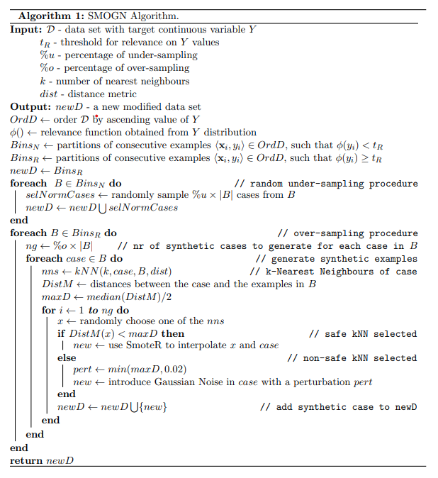
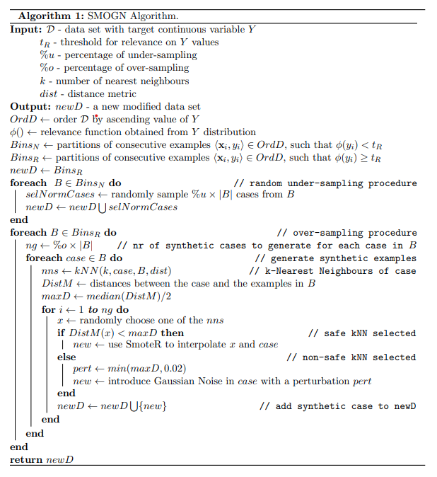
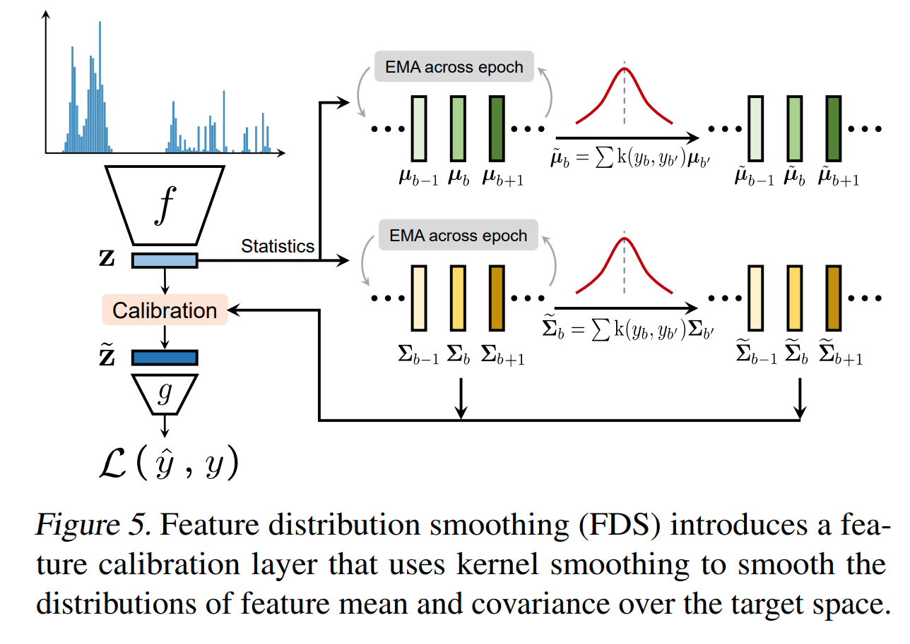
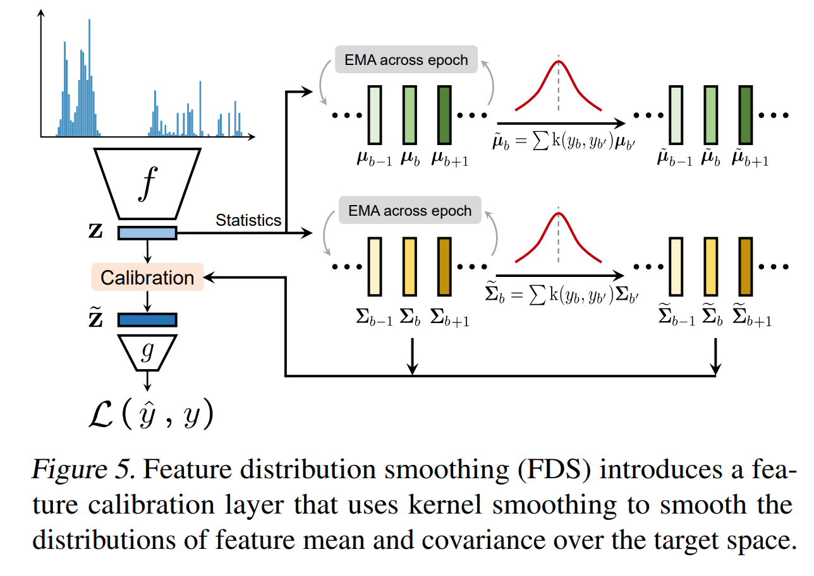
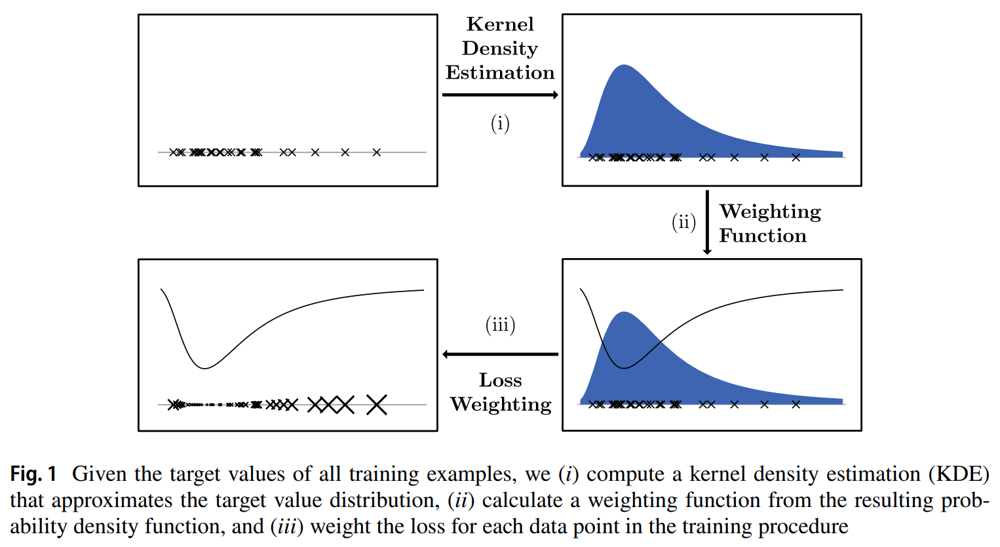

Regression
-
SMOGN: a pre-processing approach for imbalanced regression
BibTex
url=http://proceedings.mlr.press/v74/branco17a/branco17a.pdf
@inproceedings{branco2017smogn,
title={SMOGN: a pre-processing approach for imbalanced regression},
author={Branco, Paula and Torgo, Lu{\'\i}s and Ribeiro, Rita P},
booktitle={First international workshop on learning with imbalanced domains: Theory and applications},
year={2017}}
Summary
SOMGN combines both undersampling and oversampling to tackle imbalance regression. First the dataset is separated into two groups based on relevance, where high relevance data are target ranges where samples are rare and non-existant, and low relevance are target range where samples are frequent. For irrelevant ranges, they perform undersampling by randomly selecting a percentage of frequent ranges samples from the dataset. For relevant ranges, they combine two oversampling techniques. Given a rare case, they consider k nearest neighbors and calculate the safety distance as half of the median distance between the cases and its neightbors. For all k neighbors within the safety distance, they oversample by interpolating between the case and the safe neighbors. For unsafe distnaces, they add small gaussian noise to the case to produce a synthetic sample. Both oversampling produce very conservative synthetic data.
Problem Real world data usually follows a long tail distribution in regression as well where some range of the target have few to no data samples
Solution, Ideas and Why Generate additional synthetic samples where are few or none to compensate. oversample or generating synthetics for non frequent ranges by interpolating if neighbor distance is safe or adding gaussian noise otherwise. undersample frequent target ranges
Images
 
 -
Smoteboost for regression: Improving the prediction of extreme values
BibTex
url=https://ieeexplore.ieee.org/stamp/stamp.jsp?tp=&arnumber=8631400
@inproceedings{moniz2018smoteboost,
title={Smoteboost for regression: Improving the prediction of extreme values},
author={Moniz, Nuno and Ribeiro, Rita and Cerqueira, Vitor and Chawla, Nitesh},
booktitle={2018 IEEE 5th international conference on data science and advanced analytics (DSAA)},
year={2018}}
Summary
Smoteboost combines generating synthetic samples and boosting to tackle imbalance regression. First they use SMOTE for a prior work to generate new synthetic samples. With the augmented dataset, they use a variant of Adaboost to learn an ensemble of regressors. They use weak models at every iteration that learn from the mistake of the prior iteration models.
Problem Real world data usually follows a long tail distribution in regression as well where some range of the target have few to no data samples
Solution, Ideas and Why
Images
use SMOTE to generate synthetic samples of rare ranges and use Boosting to obtain an ensemble of regressors


-
Delving into deep imbalanced regression
BibTex
url=http://proceedings.mlr.press/v139/yang21m/yang21m.pdf
@inproceedings{yang2021ldsfds,
title={Delving into deep imbalanced regression},
author={Yang, Yuzhe and Zha, Kaiwen and Chen, Yingcong and Wang, Hao and Katabi, Dina},
booktitle={International Conference on Machine Learning},
year={2021}}
Summary
This paper tackles that problem of imbalance regression by smoothing the label distribution and the feature distribution. They noticed that the error distribution doesn't correlate with the label distribution like it does in imbalance classification. To tackle this issues, they apply a gaussian kernel convolution operation to the label distribution to smooth it. The kernel size has to be not too small to avoid overfitting and not too large to avoid oversmoothing. With the right kernel size, each target range is smoothed with its neighboring ranges. They also noticed that the feature distribution is not calibrated with the label distribution. To tackle this issue, they collect feature means and variances across bins. They smooth the means and variances based on the neighboring bins means and variances. They then calibrate the original features based on the smoothed means and variances by doing a distribution shift. Their method can be combined with other balancing techniques once the smoothed label distribution is obtained.
Problem Imbalance regression is a common problem in real world data where some ranges of the target have few to no data samples. Especially, error distribution doesn't correlate with the target distribution like it does in imbalance classification. On top of that, the features distribution is not calibrated with the label distribution.
Solution, Ideas and Why Smooth the label distribution using a gaussion kernel convolution operation to estimate rare/missing ranges based on neighboring ranges. Smooth the feature distribution by collecting feature means and variances across bins, smoothing them, and calibrating the original features based on the smoothed means and variances
Images
 
 -
Density-based weighting for imbalanced regression
BibTex
url=https://link.springer.com/article/10.1007/s10994-021-06023-5
@article{steininger2021density,
title={Density-based weighting for imbalanced regression},
author={Steininger, Michael and Kobs, Konstantin and Davidson, Padraig and Krause, Anna and Hotho, Andreas},
journal={Machine Learning Journal},
year={2021}}
Summary
This paper tackles that problem of imbalance regression by balancing the loss function. First the apply gaussian kernel smoothing to the label distribution to estimate rare/missing ranges based on neighboring ranges. They then obtain a density weighting function by taking the inverse of the smoothed label distribution and normalize all data points density values. Their density function has the following properties:
- Samples with more common target values get smaller weights than rarer samples.
- weighting function yields uniform weights for alpha = 0, while larger alpha values further emphasize the weighting scheme. This provides intuition for the efects of alpha
- No data points are weighted negatively, as models would try to maximize the diferrence between estimate and true value for these data points during training
- No weight should be 0 to avoid models ignoring parts of the dataset.
- The mean weight over all data points is 1. This eases applicability for model optimization with gradient descent as it avoids infuence on learning rates
Problem Imbalance regression and imbalanced loss function
Solution, Ideas and Why density weighting function takes in the smoothed label distribution and produce a reverse distribution where frequent ranges are weighted lower and rare range higher. Apply density weighting function as a coefficient to any regression loss function to ensure the network to focus an rares.
Images

-
Balanced mse for imbalanced visual regression
BibTex
url= https://openaccess.thecvf.com/content/CVPR2022/papers/Ren_Balanced_MSE_for_Imbalanced_Visual_Regression_CVPR_2022_paper.pdf
inproceedings{ren2022bmse,
title={Balanced mse for imbalanced visual regression},
author={Ren, Jiawei and Zhang, Mingyuan and Yu, Cunjun and Liu, Ziwei},
booktitle={Proceedings of the IEEE/CVF Conference on Computer Vision and Pattern Recognition},
year={2022}}
Summary
This paper tackles the problem of imbalance regression by balancing the loss function. They obtained a balanced MSE by first assuming that the target distribution is uniform and doing a statiscal transfer from a balance uniform distribution to a original imbalanced distribution during training and testing the model on a balanced distribution. Unfortunately, the statiscal transfer carry an integral that is intractable to compute. They approximate the integral using GAI, BMC or BNI. GAI is GMM-based Analytical integration which uses a gaussian mixture model to approximate the integral. BMC is Batch-based monte carlo that approximate the integral by an average over the batch. BNI is Bin-based numerical integration that approximate the integral by an average over the target bins.
Problem MSE loss function is not suitable for imbalance regression
Solution, Ideas and Why train on balanced MSE loss function based on an assumed uniform test distribution. To compute the integral part of the Balance MSE, approximate it using bins, monte carlo technique, or gaussian mixture models
Images


-
RankSim: Ranking Similarity Regularization for Deep Imbalanced Regression
BibTex
url=https://proceedings.mlr.press/v162/gong22a/gong22a.pdf
@inproceedings{gong2022ranksim,
title={RankSim: Ranking Similarity Regularization for Deep Imbalanced Regression},
author={Gong, Yu and Mori, Greg and Tung, Fred},
booktitle={International Conference on Machine Learning},
year={2022}}
Summary
This paper is tackling the problem of imbalance regression by calibrating the feature space such that for any sample, the sorted list of its neighbors in the feature space is the same as the sorted list of neighbors in the target space. To achieve that they compute the pairwise similarity matrices for both features samples and labels samples. They then compute the ranking similarity loss between the two matrices. They approximate the ranking function gradient by constructing a family of piece-wise affine continuous interpolations that trade off informativeness of gradient with fidelity to original function. They then use the gradient to update the model parameters.
Problem Features are not well calibrated where the sorted list of neighbors in the feature space is not the same as the sorted list of neighbors in the target space.
Solution, Ideas and Why Regulariser that encourage for any sample, the sorted list of its neighbors in feature space to match the sorted list of its neighbors in label space. Approximate the ranking function gradient by constructing a family of piece-wise affine continuous interpolations that trade off informativeness of gradient with fidelity to original function.
Images